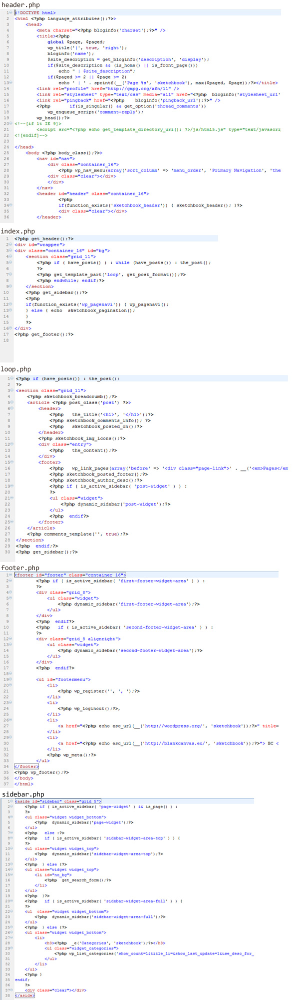

“Sketchbook” Documentation v1.0
“Sketchbook”
Created: 28/03/2012
By: Tomasz Mazur
Table of Contents
-
Instalation
-
Video documentation
-
HTML Structure
-
PHP Code Explanation
-
CSS Files and Structure
-
JavaScript
-
PSD Files
-
Sources and Credits
To install this theme you must have a working version of WordPress already installed. For information in regard to installing the WordPress platform, please see the WordPress Codex - http://codex.wordpress.org/Installing_WordPress
A) Instalation - top
When you are ready to install a theme, you must first upload the theme files and then activate the theme itself. The theme files can be uploaded in two ways:
-
FTP Upload: Using your FTP program, upload the non-zipped theme folder into the /wp-content/themes/ folder on your server.
-
WordPress Upload: Navigate to Appearance > Add New Themes > Upload. Go to browse, and select the zipped theme folder. Hit “Install Now” and the theme will be uploaded and installed.
Once the theme is uploaded, you need to activate it. Go to Appearance > Themes and activate your chosen theme.
B) Video documentation - top
Sketchbook - Introduction - top
Sketchbook - Theme Options - top
Sketchbook - Shortcode and classes - top
Post Format - Link, Quote, Aside - top
Post Format - Video - top
Post Format - Image and Gallery - top
Widgets - top
C) HTML Structure - top
This theme is a fixed layout with two columns. All of the information within the main content area is nested within a div with an id of "grid_11". The sidebar's (column #2) content is within a div with an id of "grid_5". The general template structure is the same throughout the template. Here is the general structure.

D) PHP Code Explanation - top
Except standard file of template, there are also files which are used to configure in theme and non-standard functions which aggrandize features of template. There is treatment below:
-
folder /admin - theme options framework - Options Framework - 0.8 by Devin Price,
-
options.php - theme options
-
folder /doc - ducumentation
-
folder /inc
-
post-options-api.1.0.1.php - post options - Post Options API 1.0.1 by Konstantin Kovshenin
-
sketchbook-post-options.php - options and functions to "Post Options"
-
shortcode.php - shortcode and classes
-
sketchbook-functions.php - functions to "Options Framework"
-
widgets.php - widgets
-
folder /js - javascript files (html 5, jquery fancybox, jquery flexslider, adapt)
E) CSS Files and Structure - top
This theme has been implemented as a fixed width layout with the 960 Grid System. The full width of the template is 960px. For more information as to how the 960 Grid works, visit the 960 Grid System website.
-
folder /css - print version, grid 960px, mobile version, editor style, plugins (lightbox, slideshow),
-
rtl.css - right-to-left version
-
style.css - the main file with styles
F) JavaScript - top
This theme imports five Javascript files.
-
html5.js,
-
adapt.min.js,
-
jquery.fancybox,
-
jquery.flexslider-min.js.
-
superfish.js
H) Sources and Credits - top
Go To Table of Contents